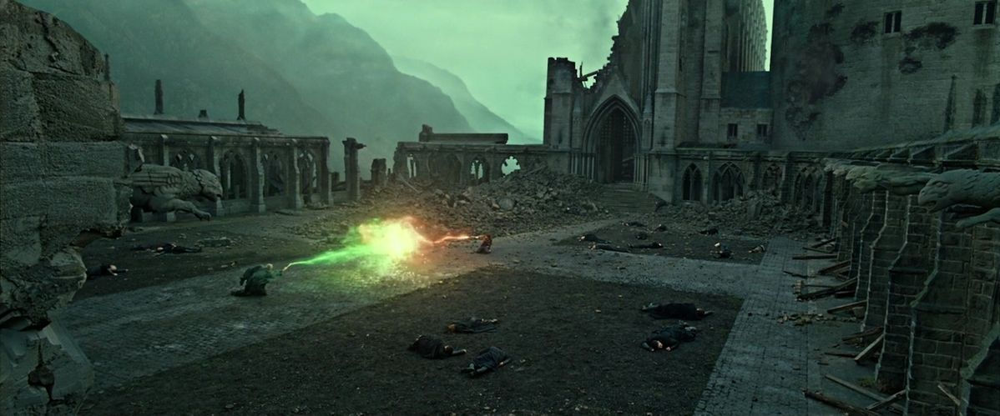

| Data De Lançamento | Diretor | Duração |
|---|---|---|
| David Yates | 2h 10m |
A história acompanha Harry Potter, Ron Weasley e Hermione Granger após a queda do Ministério da Magia e o avanço do poder de Lord Voldemort. Harry precisa deixar a segurança de sua casa e embarcar em uma missão perigosa para encontrar e destruir as Horcruxes, objetos que guardam partes da alma de Voldemort e são essenciais para que ele seja derrotado. Enquanto procuram pelas Horcruxes, os três amigos precisam enfrentar diversos perigos e passam a viver escondidos, longe de Hogwarts. O filme mistura fantasia, aventura, suspense e drama, apresentando uma fase mais sombria da saga e mostrando Harry e seus amigos enfrentando grandes perdas e perigos enquanto se aproximam da batalha final contra Voldemort.
| Personagem | Ator/Atriz | Idade Atual |
|---|---|---|
| Harry Potter | Daniel Radicliffe | 37 anos |
| Rony Weasley | Rupert Grint | 38 anos |
| Hermione Granger | Emma Watson | 36 anos |
| Voldemort | Ralph Fiennes | 63 anos |
| Severus Snape | Alan Rickman | *69 anos |
| Bellatrix Lestrange | Helena Bonham Carter | 60 anos |
| Draco Malfoy | Tom Felton | 38 anos |
| Dobby | Toby Jones (voz) | 60 anos |
| Lucius Malfoy | Jason Isaacs | 63 anos |
É difícil assistir a esse filme sem sentir que estamos nos despedindo de uma parte da nossa própria infância. A batalha final, os sacrifícios, as revelações e a conclusão da jornada de Harry fazem dele um dos capítulos mais emocionantes da franquia.
A sequência da invasão a Hogwarts é espetacular. Ver os personagens que acompanhamos durante tantos anos se unindo para proteger o castelo é emocionante demais. A McGonagall defendendo Hogwarts, Neville assumindo seu lugar como herói e Molly enfrentando Bellatrix são momentos que merecem todos os elogios do mundo. E a história de Snape? Mesmo conhecendo os acontecimentos, a revelação de suas memórias continua sendo um dos momentos mais fortes da saga. É uma sequência que muda a nossa percepção do personagem e dá outro significado a várias cenas anteriores. Mas o confronto final dos livros é superior em alguns aspectos. No livro, Harry enfrenta Voldemort diante de outras pessoas, explica seus erros e demonstra por que sua compreensão da lealdade, da morte e da Elder Wand faz diferença. No filme, o duelo ganha uma abordagem muito mais cinematográfica, com uma perseguição e a desintegração de Voldemort em cinzas. É visualmente impactante, mas perde parte do significado do confronto original. Também sinto falta de mais detalhes sobre a Batalha de Hogwarts, as mortes dos personagens, o destino de personagens secundários e o momento em que Harry explica a verdade sobre Snape. O desfecho de Pedro Pettigrew, que morre por causa da própria mão de prata no livro, também foi cortado. Apesar disso, o filme encerra uma jornada gigantesca com emoção e grandiosidade. Ele consegue transmitir a sensação de que tudo aquilo pelo qual Harry passou finalmente chegou ao fim.
Minha conclusão: um encerramento lindo, emocionante e digno da importância da saga. Poderia ter sido mais fiel ao livro em momentos decisivos, mas continua sendo uma despedida inesquecível.